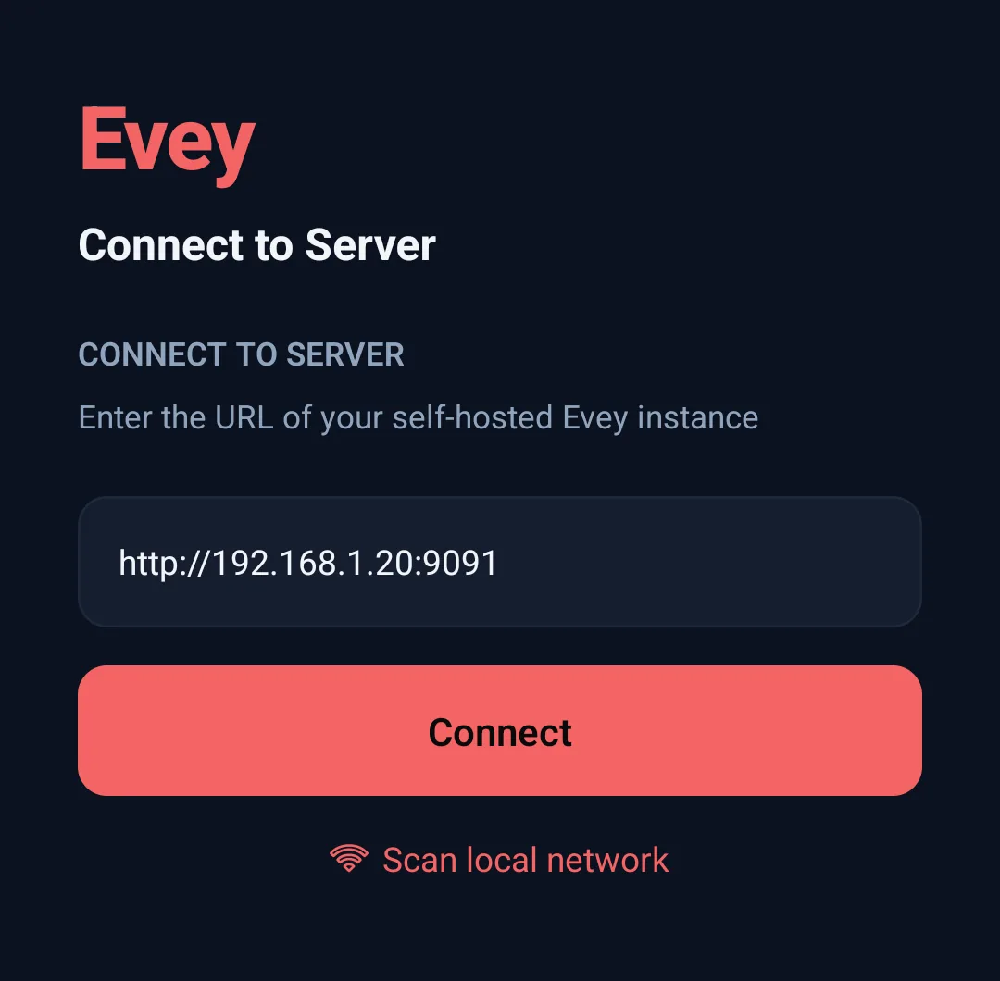
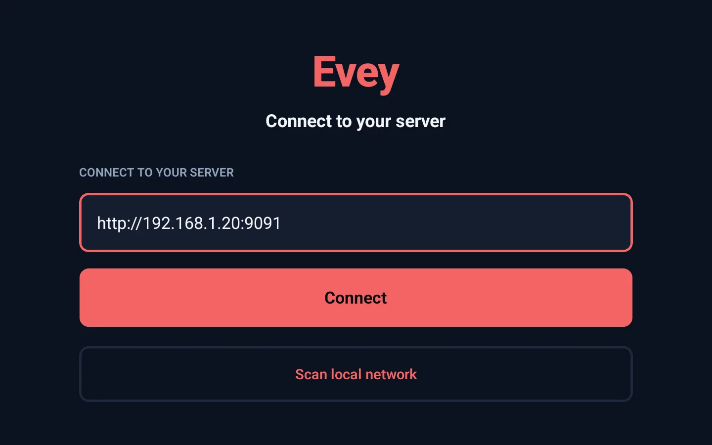

Apps and devices¶
Every app talks to your own server. You give it the server's address once, sign in, and choose a profile; resume points, watch history and favourites are the server's, so they follow you from one device to the other. This page is for the person installing the apps on the household's phones and TVs: the address to type is the first section.
| App | Where it comes from | Signing in |
|---|---|---|
| Web | Served by Evey itself, at the server's address. Nothing to install. | Username and password, or single sign-on if configured. |
| Android (phone, tablet) | The Android app. | Server address, then username and password. |
| Android TV | The Android TV app. | Server address, then Quick Connect (below) or username and password. |
| Chromecast | No app: cast from the web app in Chrome or from the Android app. | Uses the session of the device that casts. |
The administration panel is part of the web app, for administrator accounts.
The server address to enter¶
The Android and Android TV apps open on a screen titled Connect to Server
(Connect to your server on the TV):
one field (Server URL, placeholder https://your-server.com), a
Connect button and a Scan local network link. Type the same address
you open in a browser on the same network, with the scheme and the port:


| Where the device is | What to type |
|---|---|
| At home, same Wi-Fi as the server | http:// + the IP of the machine running Evey + :9091, for example http://192.168.1.20:9091. Its name works too (http://nas:9091) when your router resolves names. |
| Away from home | The public HTTPS address set in Admin → Remote Access → External URL, for example https://evey.example.org, without the port (the reverse proxy listens on 443). See Remote access and HTTPS. |
Where the pieces come from:
- The IP is the one of the computer or NAS running Docker on your home
network: in your router's list of devices, or on the machine itself (
ip aon Linux,ipconfigon Windows,ifconfigon macOS). It is never the phone's own IP. - The port is the left-hand number of the
ports:line of your compose file ("9091:9091", see Install). With the file from the installation page it is9091. - The scheme is
http://at home. Plain HTTP on the home network is the normal setup;https://is for the public address only.
Nothing comes after the port: no /api, no path. A trailing / is removed.
Once you press Connect, the app contacts the server, keeps the address,
and moves on to the sign-in screen.
Scan local network: what it finds and what it does not¶
Scan local network tries http:// on every address of four common home
subnets (192.168.1.x, 192.168.0.x, 10.0.0.x and 172.16.0.x, hosts 1
to 254) on ports 9091, 8096 and 8920, fifty at a time with a 2-second
timeout each, so a full sweep takes up to a couple of minutes. Every server
found is listed with its name (the Server name chosen at setup), its
address and its version; tapping one only fills the field, you still press
Connect. When nothing answers, the screen says No server found on this
network - enter the address below.
The scan does not find a server:
- on another subnet (
192.168.2.x,10.1.x.x...) or on another port; - when the phone is on mobile data, on a guest Wi-Fi, or on a different network from the server;
- reachable only over HTTPS.
Type the address in those cases. The apps do not use mDNS or Bonjour and do not read the phone's own network range: the four subnets above are fixed.
When the connection fails¶
Every failure is a dialog titled Connection failed. What the message means and what to do:
| Message (Android) | Cause | What to do |
|---|---|---|
| Start the address with http:// or https://. | No scheme. | Type http:// before the IP. |
| This connection is not encrypted | http:// towards an address outside the home network. The password and the video would cross the internet in the clear. |
Cancel and use the https:// public address, or Connect anyway if you know what you are doing. |
| No response from ... within 8s. | Nothing answers at that address. | Check the server is running (docker compose ps), the IP and the port, and that the phone is on the same Wi-Fi. |
| Couldn't reach ... | Host or port wrong, http/https mismatch, or a different network. |
Same checks; try http:// instead of https:// at home, and the other way round for a public address. |
| TLS/certificate problem reaching ... | A self-signed certificate. | Use http:// at home, or a certificate issued by a public authority for the public address. |
| ... answered "HTTP 404 ..." instead of a healthy Evey server. | Something answers, but not Evey: a path after the port, or another service on that port. | Remove everything after the port and check the port number. |
| ... answered, but it is not an Evey server. | A captive portal, the ISP's page or another service answered with a page of its own. | Check the address; on a public Wi-Fi, sign in to the portal first. |
| Remote access disabled | The server is reached from outside the home while its remote access is off. | An administrator turns it on in Admin → Remote Access: Remote access and HTTPS. |
On Android TV the dialogs are shorter: Server returned 404 for an answer
that is not Evey's, and the raw network error when nothing answers; the causes
and the checks are the same. The TV does not warn about http:// towards a
public address, and the scheme is required there too: a bare
192.168.1.20:9091 fails.
When an app that already knows a server cannot reach it at launch, it comes back to this screen with the saved server listed; the TV adds Your server did not answer. It may be asleep or off the network. Choose the server again once it is up.
Changing or adding a server later¶
Both apps keep a list of servers. The connect screen shows it above the field, with the one in use marked Current (Android) or Active (Android TV), and Add another server underneath. Each server keeps its own sign-in.
- Android. The sign-in screen has Change server. Once signed in, Settings → Servers opens Manage Servers: tap a server to switch to it, Rename it, or Delete it (its sign-in is cleared; the only saved server cannot be deleted).
- Android TV. Settings → Change server signs the television out and returns to the connect screen; the sign-in screen has the same button. On the connect screen, Manage Servers renames or deletes a saved server.
Quick Connect: signing in a TV without typing a password¶
On the TV's sign-in screen, choose Quick Connect (marked Recommended for TV). The screen shows a 6-character code, a QR code and how long the code stays valid. Approve it from a device where you are already signed in:
- Web: Settings → Quick Connect, type the code in Device Code and press Authorize Device.
- Android app: Settings → Quick Connect, then Scan QR Code with the camera, or type the code and press Authorize Device.
- Phone camera: scanning the QR code opens the server's Quick Connect page in the browser. Signed in there, the code is already filled in; otherwise sign in first and type it.
The TV notices the approval within seconds and is signed in to the same account. The Android app's sign-in screen offers Quick Connect in the same way, for a phone you would rather not type a password on.
What each app adds¶
- Web. Keyboard shortcuts in the player (
?lists them), browser push notifications (see Notifications), and the administration panel. - Android.
- Downloads for offline viewing. When the administrator has turned it
on (
downloads.quality_choice, see Playback delivery and downloads), the app offers a smaller copy prepared by the server for a film too large for the phone. A download stays playable offline for 30 days without contacting the server, and only for profiles allowed to see it: a kids profile cannot open a film downloaded by another profile above its age limit. - Casting to a Chromecast.
- Android TV. An interface built for the remote.
Play on, in the web and Android players, sends what you are watching to another Evey app signed in to the same account and currently open, and playback continues there.
Which device plays what¶
Each app reports what its device can decode, and the server decides for each title whether to send the file as it is or to adapt it. The same film can be sent untouched to a TV and re-encoded for an older phone. The player's Stream info panel shows the decision and its reasons: see How playback is decided. Casting has rules of its own: see Casting.